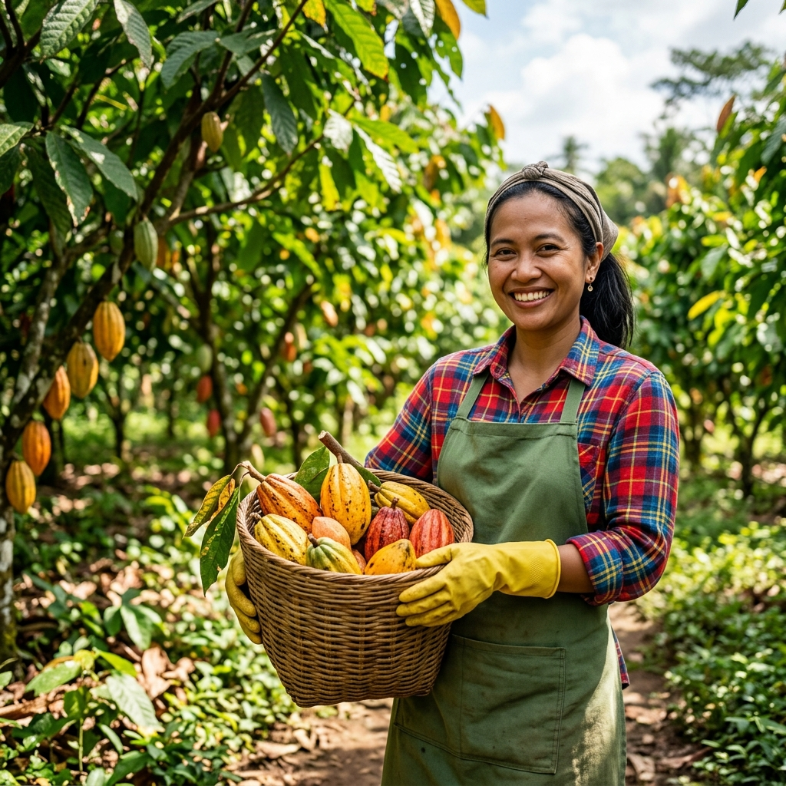
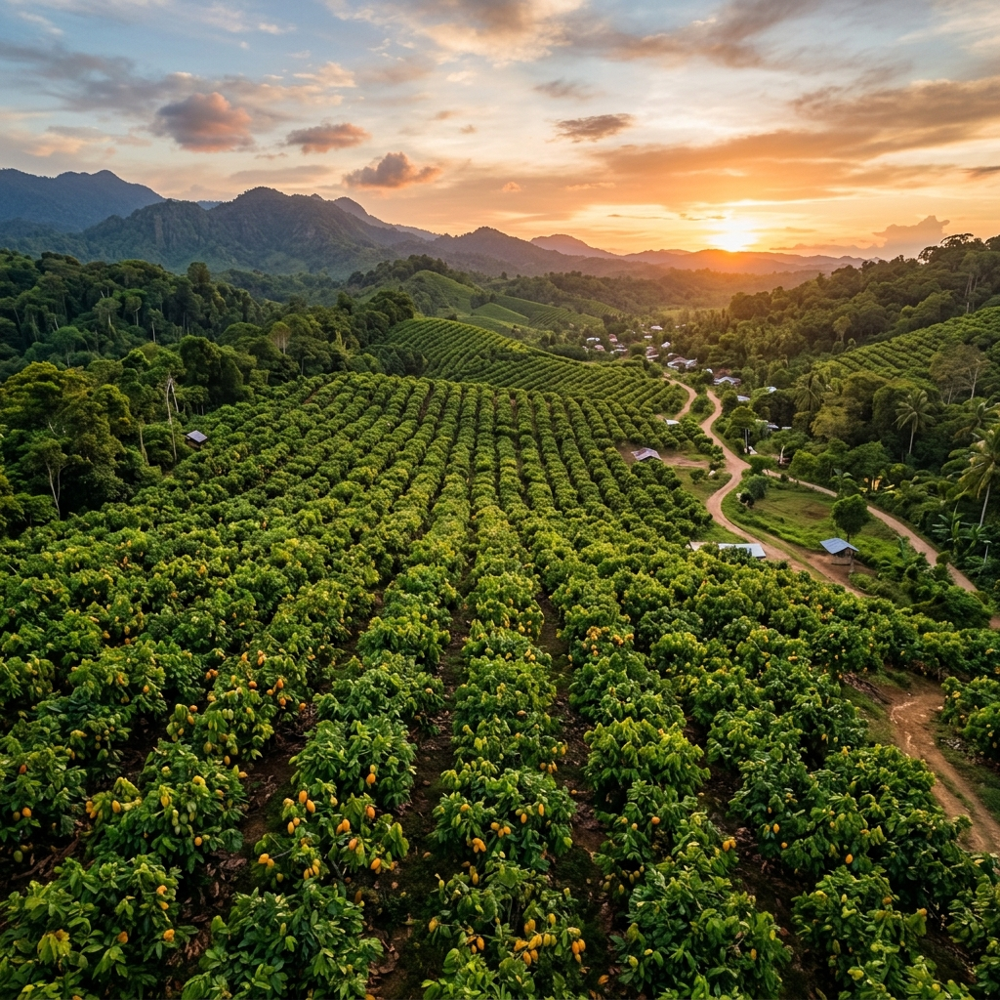

Sistem pakar berbasis CBR membantu petani mendiagnosis kondisi tanaman kakao secara mandiri, cepat, dan akurat.

Petani Terbantu
Jenis Penyakit / Hama
Kasus Diagnosis
Tingkat Akurasi

Misi kami sederhana: mendukung petani kakao dengan alat inovatif, metode berkelanjutan, dan bimbingan ahli agar setiap musim panen bisa lebih baik dari sebelumnya.
Teknologi CBR yang mencocokkan gejala dengan basis pengetahuan pakar.
Dilatih dari ribuan kasus hama dan penyakit di lapangan secara nyata.
Artikel panduan, solusi penanganan, dan informasi terkini untuk petani.
Centang gejala yang terlihat pada tanaman, dan sistem akan menganalisis penyakit atau hama yang menyerang secara otomatis.
Mulai DiagnosisMesin inferensi yang bekerja seperti seorang pakar – membandingkan kasus baru dengan ribuan kasus yang sudah terdokumentasi.
Coba SekarangKonten panduan lengkap tentang penanganan hama, penyakit, dan praktik terbaik budidaya kakao dari para ahli.
Baca ArtikelPantau tren penyebaran hama dan penyakit di wilayah Kecamatan Toari melalui data riwayat diagnosis komunitas.
Lihat RiwayatAmati tanaman Anda dan centang semua gejala yang terlihat pada formulir diagnosis kami.
Sistem CBR kami menganalisis gejala dan mencocokkan dengan basis data kasus penyakit kakao.
Dapatkan hasil diagnosis lengkap beserta rekomendasi penanganan yang tepat sasaran.
Gratis, cepat, dan akurat. Tidak perlu daftar untuk memulai diagnosis.